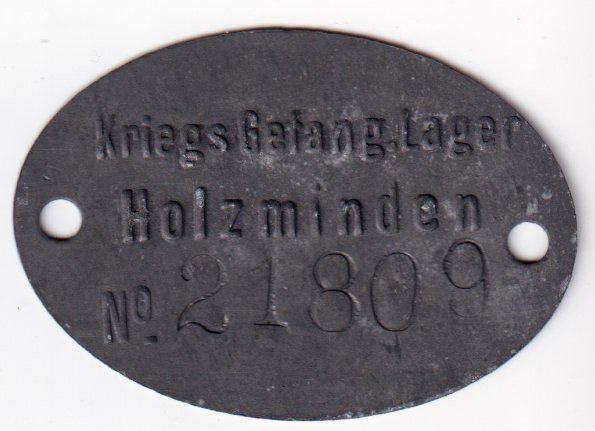

Marguerite Saint-Léger, née Delemer (1876-1953), est déportée de Lille entre le 8 et le 11 janvier 1918 comme otage civile et internée au camp d'Holzminden, en Basse-Saxe, sous le numéro 21 809, baraque 21. Elle y reste jusqu'au 24 juillet. Son mari André est demeuré seul dans Lille occupée ; leurs trois enfants — Claude, vingt ans, aspirant à Saint-Cyr, Annie, dix-neuf ans, et Philippe, treize ans — sont de l'autre côté du front. Le règlement du camp n'autorise qu'une lettre tous les six jours, à un seul correspondant, acheminée par la Suisse. Pour écrire malgré tout à tous les siens, Marguerite emprunte le tour et le nom de ses compagnes de baraque : c'est pourquoi ces vingt-six lettres de mars à juillet 1918 portent des noms d'expéditrices très divers, alors que la main et la voix restent les siennes.
Le contexte
La déportation de Marguerite répond à une logique de représailles aujourd'hui peu connue. Après l'entrée des troupes françaises en Alsace en 1914, la France avait interné sur son sol des ressortissants de l'Empire allemand et environ huit mille Alsaciens-Lorrains suspectés de fidélité à l'Allemagne, répartis dans une cinquantaine de camps en France et en Algérie. Pour contraindre le gouvernement français à les rendre, l'occupant déporta en retour des notables des régions envahies : trois cents en novembre 1916, plusieurs centaines en janvier 1918. Marguerite note dans son journal le calcul qui lui a été signifié, dix Français notables pour chaque Alsacien retenu, soit sept cent vingt personnes pour soixante-douze Alsaciens. Les femmes partirent vers Holzminden, les hommes vers la Pologne et la Lituanie, dans des conditions bien plus dures.
Holzminden était le plus grand camp d'internement civil d'Allemagne, prévu pour dix mille personnes et en abritant 4 240 en octobre 1918. Une centaine de baraquements de planches, une double clôture de barbelés, des miradors ; les femmes séparées des hommes, chaque interné portant un brassard numéroté. Le froid, la faim, une bureaucratie tatillonne, et surtout l'ennui et l'angoisse d'une attente sans fin. On y vivait pour une large part des colis venus de France et de Suisse : une pomme de terre devenait un trésor, un bloc de chauffage un objet précieux.
Toute la correspondance est suspendue à un espoir de rapatriement sans cesse annoncé puis différé. Les accords franco-allemands signés à Berne le 26 avril 1918 prévoient la libération des internés civils, mais leur application dépend de la remise des Alsaciens-Lorrains à la frontière. Les premiers convois ne partiront qu'à la mi-juillet.
Dates repères, 1918
1er janvier — distribution des convocations en vue d'un nouveau convoi d'otages.
7 janvier — les hommes partent, vingt de Lille et neuf de La Madeleine ; les femmes ne sont pas encore désignées.
Entre le 8 et le 11 janvier — Marguerite est déportée de Lille ; son mari la voit partir du hall de la gare.
5 mars — première lettre conservée de la série.
21 mars — début de l'offensive allemande du printemps ; les lectures de Marguerite ne sont « pas réconfortantes ».
26 avril — signature à Berne des conventions franco-allemandes sur les prisonniers de guerre et les internés civils.
22 mai — une centaine d'internées reçoivent l'ordre de faire leurs bagages, puis un contre-ordre.
Mi-juin — la convention de Berne est affichée dans le camp.
14 et 15 juillet — convois de rapatriement : les Alsaciens-Lorrains le 14, les otages le 15.
24 juillet — Marguerite quitte Holzminden.
Octobre — le camp compte encore 4 240 internés.

Marguerite portait le numéro 21 809
À sa fille Annie, au château de Rosières (Ardèche). Écrite sous le nom de Cécile Boogaert, n° 16.396, baraque 12.
Adresse: via Suisse
Mademoiselle Chint Léger
Château de Rosières
par St Félicien (Ardèche)
Lyon, Rhône, France
Ma chère petite Annie,
Votre colis m'a fait très grand plaisir, il était fort bien composé pour moi, et je serais contente que vous m'en envoyiez un dans le même genre tous les mois, je voudrais aussi des colis de pommes de terre, et des colis d'oranges et bananes tout à fait vertes, veuillez m'envoyer un chapeau, très simple, canotier en velours noir bordé, dans le genre de celui que vous aviez rapporté, pas trop grand mais en bonne qualité et avec une très grande entrée de tête, 0m 60 environ. Veuillez remercier beaucoup de ma part T. Aline et T. Angèle et leur dire que nous allons bien ! Écrivez à mon oncle Gustave dites-lui que je le remercie, sa bonne lettre m'a fait un immense plaisir, qu'il m'écrive souvent et m'explique surtout tout ce qu'il fait et qui nous intéresse tant père et moi. A-t-il l'espoir d'arriver à faire rentrer Marguerite chez elle ? Je remercie aussi Simone et je compte sur eux tous pour moi et pour Claude ; j'envoie à Geno toute mon affection et prends une vive part à son grand chagrin, pauvres petites si terriblement éprouvées déjà !! Écrivez moi de longues lettres dans lesquelles vous me donnerez bien des détails sur Claude, envoyez-moi ses photographies, dites lui qu'il m'écrive et me dise ce qu'il pense ? Je voudrais six pantalons blancs tout unis de votre taille, 12 mouchoirs de poche et du tissu blanc pour me faire des blouses d'été. Dites moi si vous avez de bons professeurs, si vous espérez réussir votre examen et si vous faites des progrès en piano ? Je suis contente que père aille bien.
À son fils Claude, sous couvert de Simonne Barrois, à Versailles. Écrite sous le nom de Jeanne Vermaesen, n° 22.247, baraque 12.
Adresse: via Pontarlier
Madame Barrois
21 Rue Mansart
Versailles, S. et Oise. France
Bonne fête et merci de votre lettre, mon cher grand garçon,
écrivez moi souvent, donnez moi beaucoup de détails. Je suis ravie de vous savoir à l'école près de Simonne. Vous savez combien mon esprit vous suit et la joie que j'aurai de vous voir réussir ! Votre cher papa sera bien heureux, il aura tant besoin de vous et a tant souffert ! Il pense toujours à l'avenir, et combien je suis partagée entre l'immense bonheur de vous revoir et le désir d'adoucir pour lui les difficultés qui nous restent à traverser ! Jamais, vous ne saurez, mes chers petits combien mon cœur est partagé ! Je vais assez bien, et maintenant que je vous sais en bonne voie et Lélé se fortifiant, je retournerai près de père avec plus de paix en attendant le beau jour de notre réunion ! Merci ma bonne petite Simonne de tout ! Je bénis vos légumes et vous en demande très souvent ainsi que farines lactées, sucre, gruyère, sardines. Mille tendresses à Geno et tous.
À son fils Claude, sous couvert de Simonne Barrois, à Versailles. Lettre écrite sous le nom de Léonie Evens, n° 21.569, baraque 12.
(NDLR : ce recto, expédié par Marguerite sous son propre nom et adressé à « M. C. Saint Léger, chez Mme Barrois », figure dans le dossier sans lettre correspondante ; il est rapproché ici de la seule lettre adressée à Claude chez les Barrois. La lettre elle-même porte le nom de Léonie Evens.)
Adresse: M C. Saint Léger, chez M-me Barrois
21 Rue Mansart, Versailles, Seine et Oise, France
Evens (Léonie)
Lager Holzminden
Nr. 21.569
Bar. 12
Mon grand Claude,
Combien votre chère écriture et celle de Simonne (NDLR : Simonne Barrois) et de son beau père m'ont fait plaisir, écrivez moi souvent et longuement. À quelle époque pensez vous avoir fini vos nouvelles études et dans quel métier comptez vous travailler ensuite ?...
Vous savez mon chéri combien ma pensée vous suit tous les trois, et vous ne sauriez croire combien ma tête et mon cœur sont arrachés à la pensée que Guitte pourrait avoir à prononcer un choix de déplacement entre père et vous ! Vous devinez son immense désir de vous revoir et à quel point elle doit être lasse de la vie si cruelle dont vous n'avez connu qu'un tout petit début... Hélas, comment cette malheureuse se décidera-t-elle tant qu'elle vous sait bien portants à abandonner dans sa si pénible solitude le pauvre Sagan qui a fait tant de sacrifices et est si malheureux ?... Qu'en pensez-vous, mon cher petit, je ne voudrais pas que l'avenir me fasse de mon côté regretter ce que je fais, et je ne sais plus ce que je dois faire ?
Faites venir Annie à chacune de vos vacances, et allez voir votre cher petit frère, soyez bien pour eux le frère aîné sur lequel je puis compter, qu'ils aient comme moi confiance en vous ! Vous avez prouvé que quand vous vouliez, vous pouviez !... Faites bien comprendre à Annie que je suis heureuse qu'elle travaille et occupe son temps et son intelligence ; j'aime beaucoup Simonne et ses beaux parents, et je suis sûre qu'ils respecteront et comprendront mon désir qu'Annie ne voyage pas de l'un chez l'autre, qu'elle ne passe pas d'une main dans l'autre en prenant une indépendance et une liberté qui lui feraient plus tard un très grand tort ! Que Simonne lorsqu'elle l'aura chez elle pense que je suis loin, que j'ai tant d'autres chagrins et d'autres soucis, que j'ai un besoin absolu que celui-là me soit évité ; qu'en dehors de vos permissions Annie reste complètement dans les mains de Tante Hélène ! Que Philip ne travaille pas trop et que sa santé passe avant tout, j'espère bien le retrouver avant l'hiver prochain, et nous verrons s'il ne vaudrait pas mieux qu'il aille en pension, mais pour le moment que la bonne Tine le soigne le surveille, ainsi que ses professeurs et ses camarades et ne pense qu'à le fortifier ! Je crains pour lui l'été à Pau jusqu'en Juillet si il faisait chaud il vaudrait mieux qu'il aille à la mer, Tante Pauline m'offre de le prendre chez elle quand elle quittera Cannes !
Je remercie Simonne de ce qu'elle fait pour moi, ses épinards et endives me font un plaisir extrême, j'en voudrais le plus souvent possible, pourrait-elle aussi m'envoyer des colis de 5 k. de p. de terres, cela me manque beaucoup ! Tout ce qu'elle m'a envoyé est parfait, et nous sommes dans un tel dénuement que j'accepte de très grand cœur ! Je manque terriblement de brosses à ongles et à dents, de crochets et élastiques à jarretelles, de mercerie, des souliers et bas jaunes d'été, taille 39 à talons plats genre Golf très solides, je n'ai pas besoin de pharmacie sauf 250 grammes de graine de lin ; je voudrais des graines de plantes et fleurs de pleine terre, pois de senteur, capucines, etc. etc. pour planter et égayer notre terrain ! Tout ce à quoi elle pensera me fera bien plaisir et je la remercie !...
Je suis heureuse des bonnes nouvelles de Max et d'Élise, j'embrasse la pauvre petite Géno !
Je suis heureuse que votre petit père aille bien et qu'il ne manque pas de nouvelles des siens, surtout soignez le bien ! Je voudrais une vraie jolie photo de vous en buste, avec et sans chapeau ! Je compte sur Simonne pour la faire faire.
Mille tendresses, mon cher grand garçon, mon oncle Gustave m'a bien intéressée avec les sinistres arrangéz-vous pour que Geoffroy m'écrive une bonne lettre ! Je vous embrasse tous.
Je voudrais des graines de plantes et fleurs de pleine terre, pois de senteur, capucines, etc. etc. pour planter et égayer notre terrain
À Simonne Barrois, à Versailles. Écrite par Marguerite sous son propre nom, otage n° 21.809, baraque 21.
Adresse: via Suisse, Madame J. Barrois
21 Rue Mansart
Versailles, S. et Oise. France
Ma chère petite Simonne,
Vos colis me font un très grand plaisir ils sont parfaits, les légumes frais font mes meilleurs repas, ne pourriez vous pas m'envoyer à chaque occasion des blocs de chauffage, dont je vais avoir très grand besoin tous les jours, du savon et cristaux, un tube vaseline, 3 pantalons blancs très unis ! Des pommes de terre crues en colis de 5 kilos arrivent bien et seraient les bienvenues une fois par semaine, 2 ou 3 blouses d'été blanches ! Merci de tout ce que vous faites pour mon grand fils et Annie, embrassez Geno et vos chers beaux parents, que Gustave m'écrive, il me fait tant de plaisir, j'espère que Max est tout à fait remis ainsi que sa maman ! Nous allons bien, malgré que le temps est long, je suis contente des bonnes nouvelles de Cagan, de votre papa, et du Cobl, elles sont très rares, mais bonnes ! Je mange volontiers du poulet rotis, du jambon, du thon, les abricots secs et pruneaux sont excellents, mais il faut du chauffage pour les cuire. Baisers Cla.
À sa fille Annie, chez sa tante Hélène de Lavalette, à Rosières. Écrite sous le nom de Louise Valmé, n° 21.887, baraque 30.
Adresse:
Mademoiselle Annie, chez M-me de Lavalette
Rosières. St Félicien
Ardèche, France
Ma chère Annie,
je vous remercie de votre lettre du 4 Avril. Je ferai tout ce que je pourrai pour revenir en France et je suis contente de voir que vous avez fait des progrès en Français ! Faites un bon effort pour votre examen, nous passerons ensuite de bonnes vacances avec Claude et Philip ! Vous pourrez ensuite vous intéresser à bien des choses, cet examen est une base qui me prouvera votre effort et votre bonne volonté ; je compte que vous surveillerez aussi beaucoup votre tenue afin que je vous retrouve une jeune fille bien élevée et comme il faut à laquelle je pourrai donner toute mon affection. Soyez bien sûre, ma chère petite Annie que c'est pour vous plus encore que pour moi, j'étais si triste d'être restée jusqu'à maintenant sans nouvelles de vous !... Je vais mieux et l'air d'ici avec ce grand repos forcé m'ont beaucoup remonté la santé !... La tristesse et l'inquiétude morale de notre avenir à tous est une source de grande fatigue qui ne se terminera malheureusement qu'avec la guerre ! Veuillez demander à Tante Hélène qu'elle remercie le docteur Aussut de sa bonne lettre qui m'a bien rassurée pour Philip, merci des colis, continuez et envoyez moi du pain d'épice et des pruneaux. Baisers.
À Simonne Barrois, à Versailles. Écrite sous le nom de Bertha Janne, n° 21.511, baraque 12.
Adresse: via Suisse, Madame J. Barrois
21 Rue Mansart
Versailles, Seine et Oise. France
Ma chère Simonne, je reçois enfin de vos nouvelles à cause de la fermeture de la frontière, vos légumes et colis me sont très bien arrivés et me font un immense plaisir, pourriez-vous me continuer souvent les légumes et m'envoyer des colis de pommes de terre de 5 kilos. Je voudrais aussi et surtout du combustible, vous ou Tante Mimi avez envoyé des blocs solidifiés à mon oncle Jean, et je suis très inquiète parce que quand il fera beau temps je serai réduite à ce chauffage ! Je compte donc sur vous. Embrassez mon grand garçon, je pense tant à lui, et voudrais tant que les événements nous réunissent bientôt. Je vais bien mais voudrais de longues nouvelles de tous. Je vous embrasse bien, bien tendrement ma chérie et suis contente des bonnes nouvelles d'André.
À son fils Claude. Écrite par Marguerite sous son propre nom, n° 21.809, baraque 21.
Marguerite Saint Léger
Lager Holzminden
559 Nr. 21.809
Bar. 21
Mon cher grand fils,
Je lis et relis les quelques bonnes lignes reçues de vous et de Philip avec une profonde émotion ; je voudrais sur toute votre vie tant de détails que je n'ai pas !... Il me semble que ces années passées loin de vous ont creusé dans ma vie un grand vide qui ne se remplira pas, puisque j'ignore tout de vous et que j'ai dû me contenter pendant de si longs mois de l'assurance que vous étiez bien portants... Ces courtes nouvelles ne faisaient que me calmer mon impatience et me rassurer mon esprit et mon cœur, mais vous ne saurez jamais mes chers enfants, la tristesse que je ressens et l'immense sacrifice que j'ai fait en perdant pendant si longtemps tout contact avec vous !... Vous savez, mon cher Claude tout le désir que j'ai eu de vous voir grandir, travailler et vous fortifier, moralement et physiquement, et vous voilà grand maintenant, sans que j'ai la joie de profiter de vous dans ces heures tragiques !.. Je ne m'en plains pas, puisque chacun me dit que vous avez une bonne santé et un bon moral, continuez à faire ce que vous dictera votre bonne volonté, vous aurez besoin plus tard de toute votre énergie pour aider votre père qui a beaucoup souffert... Peut-être le bonheur de nous retrouver nous sera-t-il donné cette année, et nous serons d'autant plus heureux de nous revoir que chacun de nous aura courageusement rempli son devoir !... – Je suis terriblement inquiète et impressionnée, vous en devinez la raison, et mes lectures ne sont malheureusement pas réconfortantes !.. Écrivez-moi chaque fois que vous le pouvez et dites à Annie que je n'ai encore rien reçu d'elle ! Je remercie Géno de sa gentille lettre, je prends une vive part à sa douleur qui éclate dans chacune de ses lignes ; pauvre petite je lui souhaite une belle petite fille qui ne remplacera pas la petite Monique, mais sera un dérivatif à son chagrin ! – J'embrasse Simonne et la remercie de me gâter, j'en ai bien besoin étant dans une purée noire. Je voudrais des jarretelles, de l'élastique et des crochets à jarretelles blancs, un corset très bas taille 44. Busc et baleines de rechange. Des souliers jaunes genre Golf et des bas de fils assorties taille 39 talons plats. Du coton ou fil pour les raccommoder des gants dame jaune lavables. Un chapeau feutre mou genre Golf. Des épingles à chapeau et de toutes sortes, des aiguilles, des cordons, du fil, des ciseaux, un coussin oreiller, des tabliers bleus de cuisinière, deux grandes blouses me couvrant toute entière, des lacets de corset du savon de lessive et de toilette, des bâtons de savon Gibbs à raser (une douzaine). Je voudrais des tricots de coton blancs sans manche faisant cache corset. 3 pantalons blancs tout unis. Je la remercie pour le ravitaillement qu'elle m'envoie les légumes sont parfaits qu'elle y joigne des sardines du poulet du thon, du jambon, des fruits séchés de chez Hédiard 21 Place de la Madeleine, j'ai des farmies pour deux mois. Je vous embrasse tous, tous que mon oncle Gustave m'écrive ce qu'il pense. Pourriez-vous me donner des détails sur l'association Donat et Delesalle. Mille tendresses et merci à tous –
À Simonne Barrois, à Versailles. Écrite sous le nom de Léonie Evens, n° 21.569, baraque 12.
Adresse: via Suisse, Madame Joseph Barrois
21 Rue Mansart
Versailles, Seine et Oise. France
Ma chère petite Simonne, J'espère que tous nos enfants continuent à se bien porter, mais avec quelle angoisse je pense à eux tous et combien je voudrais des nouvelles. Vos colis me font un très grand plaisir et je remercie votre cuisinière en même temps que vous, car je vais avoir de plus en plus besoin de vous n'ayant guère de combustible car il ne fait plus froid et dans un mois, nous n'aurons plus besoin d'être chauffés, tout ce que vous m'enverrez de cuit me rendra un énorme service, avec l'aide d'un bloc Rép, je pourrai donc en sortir ! Quelle misère morale et physique, je ne me doutais pas que rien puisse en approcher, veuillez expliquer à Augustine comment vous préparez le bouchage éclair afin qu'elle m'en envoie aussi deux fois par semaine. Je voudrais du porridge et des fruits séchés de la maison Hédiard 21 Place de la Madeleine. Embrassez Gustave, Élise, Max, la chère Géno, je voudrais savoir son baby né. Donnez moi des nouvelles de mon grand fils auquel je pense tant, embrassez-le de ma part, et faites moi envoyer un caoutchouc beige de sport car je n'ai pas de manteau d'été et du savon Gibbs en bâton à raser et surtout du savon pour ma toilette et mon linge ; faites moi un compte de tout cela pour plus tard ! Qu'espère Gustave pour son amie Marguerite ! Je vous embrasse tendrement et caresse vos chères petites et mon grand fils. Du chauffage surtout ! Baisers.
À son fils Philippe, à Pau. Verso d'une carte dont le recto manque : le nom de l'expéditrice n'est pas connu.
Mon petit Philip chéri, Vos lettres me font un bien grand plaisir, je suis très heureuse que vous achetiez une bicyclette pour vos vacances et je vous charge de demander à la tante ou à Simonne 50 frs de ma part pour que je vous donne aussi une partie de la bicyclette ! Je serais bien bien heureuse aussi de vous revoir, et j'ai bien envie de revenir vous voir si je le peux puisque vous me le demandez si gentiment pour soigner votre vieille merotte !... Merci de vos colis. Les sandales sont trop petites car je mets de gros bas de laine pareils aux vôtres pour qu'ils soient faciles à raccommoder "Je voudrais de la laine mélangée verte et de la marron pour les repriser !... Je voudrais aussi du bon savon et cristaux pour mes lessives, j'ai assez de farines pour deux mois, mais les pruneaux et fruits séchés me font bien plaisir et Line devrait me faire et m'envoyer des boîtes de légumes comme le fait Simonne au moins 2 fois par semaine, car l'été je ne pourrai rien cuire. Jouez bien, mon Lili chéri et continuez à me donner vos places qui m'intéressent beaucoup, mais s'il fait trop chaud à Pau il ne faut pas y rester jusqu'en Juillet – merci Line et bons baisers mon Lili –
À Simonne Barrois, à Versailles. Écrite sous le nom d'Augusta Ladrière, n° 21.568, baraque 12. Le post-scriptum est porté en tête de la lettre.
Ladrière (Augusta)
Lager Holzminden
Nr. 21.568
Bar. 12
P.S. Veuillez envoyer 50 frs de ma part à Philip pour sa bicyclette ?
Ma chère Simonne
Vos légumes m'arrivent bien, mais combien j'ai hâte d'avoir des nouvelles de tous les nôtres. Je me tourmente beaucoup, et c'est si triste d'être si loin en ce moment ! J'espère que Claude est toujours dans son école, je vous charge de bien l'embrasser car je ne puis écrire qu'à l'un de mes enfants tous les 6 jours. Je vous écris bien mal étant mal installée ! Vos colis me font un bien grand plaisir et surtout tout ce qui est cuit, il fait déjà chaud dans les baraquements et d'ici peu de temps nous n'aurons plus de charbon ; je compte donc sur vous pour m'en envoyer et m'envoyer le plus possible de plats à réchauffer ou vite préparés ! Les légumes de la marque Brevet Chollet séchés en enveloppes sont très bons, de même toutes les conserves Appert sont de 1er ordre, les fruits séchés de chez Hédiard place de la Madeleine. Je voudrais aussi un caoutchouc de sport pour pouvoir sortir quand il pleut car je n'ai que des manteaux d'hiver et pas de parapluies. Si notre séjour ici se prolongeait je voudrais aussi une grande ombrelle de bain de mer et du coutil pour faire des stores extérieurs ; il m'en faudrait 6 ou 8 mètres ! Faites moi, ma chérie un compte de tout cela ! – J'ai écrit à ma sœur, afin qu'elle vous confie Annie si vous pouvez la prendre pendant les vacances, surtout si elle réussit son examen ! – Je me tourmente beaucoup d'être sans nouvelles d'Augustine qui ne m'écrit guère, je voudrais tant des lettres d'elle bien détaillées et être exactement fixée sur la santé de mon petit Philip, je suis affreusement partagée entre le désir de revoir mes enfants et le chagrin de laisser André à la triste vie qu'il mène seul ! Qu'en pense Claude ! Si je ne rejoignais pas mes enfants avant l'hiver prochain, peut-être mettrai-je Annie dans une pension sérieuse dans le genre du Sacré Cœur ou de l'Assomption à Paris et je voudrais qu'elle soit principalement avec des jeunes filles très bien élevées et de bonnes familles afin de l'habituer à avoir une bonne tenue et pas trop de laisser aller ! Vous chargeriez vous dans ce cas d'être sa correspondante afin de la faire sortir aux vacances, ma sœur étant trop éloignée, dites-le moi très simplement, ma chère Simonne, afin que je puisse donner les indications nécessaires ! Annie est très bonne enfant, mais elle est très indépendante et je ne puis la laisser passer à sa guise de l'un chez l'autre, elle a besoin d'être surveillée et comme elle vous aime beaucoup, je suis sûre que vous pourriez avoir sur elle une très bonne influence ! Je ne sais guère ce qu'il y a comme pension qui prenne des jeunes filles, les conduise dans des cours et les traite comme des jeunes filles sorties de pension ! J'en ai parlé à madame L. Del. qui pourrait aussi s'en occuper ! Dites moi ce que vous en pensez ? Si je rentre la question ne se posera pas, mais je ne sais malheureusement pas ce que me réserve l'avenir ! – Que pense de nous votre beau père et s'occupe-t-on même de cette malheureuse question en ce moment ? – Tous vos colis me font grand plaisir et je ne puis assez vous en remercier car, en somme nous en vivons entièrement ! Donnez-moi des détails sur vous, ma chère Simonne, sur vos chères petites, Géno a-t-elle son baby, embrassez la bien de ma part ainsi que votre belle mère et tous ceux qui vous entourent ! Quand aurons nous la joie de vous revoir tous dans votre pauvre village ? Claude voudrait-il demander à Geoffroy qu'il m'écrive une bonne longue lettre, j'en voudrais aussi une de votre amie Lyna ! Surtout faites moi faire de jolies photographies de mon fils, j'en voudrais une en buste et une en pieds. Les photos de vos petites sont bien mignonnes et j'ai été si contente de voir mes deux grands avec votre excellent beau père ; Géno m'a fait aussi bien plaisir en m'envoyant ses chers petits et sa belle petite fille ! Quel chagrin de l'avoir perdue, embrassez la bien de ma part surtout, et dites lui que je ne puis lui écrire mais le ferai bientôt. Faites nos amitiés à tous ceux qui vous entourent ! Je vous embrasse, ma grande chérie ainsi que Claude, ses lettres me font tant de plaisir ! Envoyez moi des systèmes de jarretelles, de l'élastique et si vous ne l'avez pas encore fait 3 pantalons blancs unis et solides, et surtout souvent du savon et cristaux pour laver mon linge.
Mille bons baisers et à vous de tout mon cœur.
À Simonne Barrois, à Versailles. Carte écrite sous le nom de Philomène Vinoy, otage n° 22.054, baraque 32.
Adresse: via Suisse,
M-me Jacques Barrois
21 Rue Mansart
Versailles, Seine et Oise. France
Ma chère Simonne, Votre longue lettre du 26 Mars m'a fait bien plaisir. Combien je comprends votre immense chagrin. ! Je vais bien mais je trouve le temps long et bien triste ; vos colis me font grand plaisir, surtout les boîtes de légumes, sardines, thon, jambon. Je voudrais bien des pommes de terre. Les lettres de Claude me font grand plaisir ; je me contrarie beaucoup pour ma fille. Dites-moi s'il y a des pensions comme le Sacré cœur ou l'Assomption, afin que je puisse l'y mettre si je ne pense pas retourner, et voudriez-vous me servir de correspondante. Je ne puis plus la laisser à sa tante qui en est si fatiguée.
Bons baisers.
À Simonne Barrois. Formulaire d'accusé de réception de colis, rempli par Marguerite sous son propre nom.
Adresse: via Suisse,
M-me J. Barrois
21 Rue Mansart
Versailles. S. et Oise.
Accusé de réception de paquet
Ma chère petite Simonne.
J'ai le plaisir de vous accuser réception de votre colis
Nr. divers arrivé le 22 Avril 1918.
Je vous prie d'agréer mes remerciements.
Marguerite Saint Léger
Holzminden, le 25 Avril 1918.
À sa sœur Hélène de Lavalette, à Rosières. Écrite sous le nom d'Irma Stuby, otage n° 22.063, baraque 32. La lettre répond à une lettre du 30 avril : elle lui est donc postérieure de quelques jours.
Adresse: Madame De Lavalette
Bosières par St Félicien, Ardèche, France
Ma chère Hélène, Ta longue lettre du 30 Avril m'a fait bien plaisir, j'ai enfin reçu une carte et une lettre d'Annie ; je ne m'explique pas si elle est à Lyon ou en Italie ; Léon m'ayant annoncé que tu l'y envoyais. Enfin je te remercie car je suis sûre que tu as fait pour le mieux, et je suis désolée de te savoir si fatiguée ! Je suis contente que tu me dises qu'Annie travaille et s'occupe. Je t'ai écrit longuement plusieurs fois déjà au sujet de l'hiver prochain si j'étais empêchée de rentrer auprès des enfants, j'en ai parlé à Simonne et à Pauline Lemaire ; Je crois que pour l'avenir d'Annie il vaut mieux qu'elle retourne dans ce milieu que de faire à Lyon les études dont tu me parles et si Simonne veut s'en charger et lui trouver avec ton aide et ton conseil et celui d'Adeline une pension où elle suivra à Paris des cours, leçons, musique, visites de musées, etc... avec sorties chez Simonne et sa marraine, le résultat sera meilleur, Pauline Lemaire la ferait habiller. Merci pour Cl. et Ph. je désire beaucoup être là, mais nous sommes inquiètes et déçues car nous devions être parties et, sentons que notre situation n'est pas encore nette. Mille bons baisers et remerciements.
À Simonne Barrois et à son fils Claude, sous une enveloppe adressée à Pau. Le recto porte le nom d'Augusta Ladrière, n° 21.568, baraque 12 ; la lettre est signée du nom de Jeanne Thieffry, n° 22.051, baraque 5.
Adresse: via Suisse, M. P. Leroy
23 Rue Bayard
Pau, B. Pyrénées, France
De Thieffry (Jeanne) N° 22.051 - Lager Holzminden, Bar. 5
Ma chère Simonne et mon petit Claude,
Vous m'avez gâtée et vos lettres et vos colis m'ont fait bien plaisir je vous assure ; grâce à tous les bons légumes de Simonne je vais beaucoup mieux qu'à mon arrivée ici et je dors très bien ce qui ne m'arrivait plus depuis de longs mois !
Je crois d'après les journaux que nous ne resterons plus bien longtemps ici, et je me déciderai je pense à aller vous retrouver tous !.. Malgré mon regret de laisser ce pauvre père, il me semble que je ferai mieux de rentrer près de vous et ce sera pour moi une grande joie en même temps qu'un grand chagrin !
Je suis contente aussi des bonnes nouvelles de Reine et Lélé, il me semble que je ferai bien d'aller tout de suite passer quelques jours auprès d'eux après être passée à Lyon puis j'irai m'installer quelques semaines avec vous mon cher grand fils ; pour profiter de vous pendant vos mois de classes. Je rejoindrai ensuite Lélé à Vichy dont j'aurai aussi grand besoin !
Je viens d'apprendre la naissance du petit garçon de Geno, j'espère qu'elle va bien et je l'embrasse en la félicitant de tout mon cœur !
J'ai reçu aussi de bonnes nouvelles par Tante Célina qui a écrit à ma Tante Louise ; quand vous le pourrez, allez la voir mon petit Claude, cela lui fera tant de plaisir..
Dites à ma Tante Jules Lemaire que je viens enfin de recevoir un corset, mais je crains que ce soit le second et que le premier ne soit perdu ! Je la remercie beaucoup ainsi que des pantalons ; je pense qu'elle n'aura plus rien à m'envoyer !.
Je voudrais beaucoup avoir des nouvelles de Roger Masse et le savoir prisonnier ; une lettre nous disait qu'on était inquiet de lui !
Je voudrais bien savoir mon cher Claude, dans quel métier vous sortirez de l'école ; j'aurais tant aimé vous savoir dans le même métier que Louis et André Cern, mais peut-être ne pourrez-vous pas choisir !.. Comme je serai heureuse de vous embrasser mon grand chéri !
Et vous ma petite Simonne, soyez bien assurée de l'affection reconnaissante que j'ai pour vous ; je vous remercie de tout mon cœur de tout ce que vous avez fait pour moi et pour mes enfants ! Je serai contente de vous revoir et de voir vos petites qui sont si gentilles d'après leurs photographies ! Je vous embrasse tous les deux de tout mon cœur et je vous charge de toutes mes amitiés pour votre cher beau père, pour Élise, et ceux qui vous entourent. Bons baisers à vos petites et à la chère Geno.
Votre vieille Tante qui vous aime bien. Jeanne
À Simonne Barrois, à Versailles. Écrite sous le nom de Philomène Vinoy, otage n° 22.054, baraque 32.
Adresse:
Madame J. Barrois
21 Rue Mansart
Versailles
S. et Oise, France
Ma pensée Simonne, j'ai reçu avec un grand plaisir malgré leur retard, les photos de Claude et de vos petites, elles sont très mignonnes ; j'aimerais de Claude une jolie photo en buste bien faite dans le genre de celle de Pierrot Cob !.. Votre longue lettre du 13 Avril m'a fait plaisir, je vois que vous me comprenez si bien, j'aime votre franchise et votre simplicité, ma chère petite, et vous pouvez être sûre que je ferai le nécessaire pour rentrer en France ! Nous en avions le ferme espoir il y a trois jours, 100 personnes devaient être rapatriées dans les régions occupées et partir aujourd'hui !.. Qu'est-il arrivé ? nouveau contre ordre !.. manque d'accord entre les gouvernements et tout le monde reste ici !... C'est long et triste !... Votre ravitaillement m'arrive bien, vous seriez gentille de revoir mes premières cartes afin de m'envoyer les détails de ménage savon cristaux ! Je voudrais des sardines, surtout soignez très bien les emballages et mettez dans le colis la liste de ce qu'il contient et numérotez les colis, ces mesures sont nécessaires ! Combien je voudrais être près de mes enfants pour les vacances de Claude, je l'embrasse tendrement ! Je remercie Tante Marie-Louise de son colis Corcelet et j'embrasse Geno et ses gosses ! Embrassez mon grand fils pour moi et merci ma chérie de ce que vous faites pour lui, que Gustave pense à nous !
À son fils Claude. Écrite sous le nom de Louise Valmé, n° 21.887, baraque 30.
Valmé (Louise) N° 21.887 - Lager Holzminden, Bar. 30
Mon cher grand Claude, Votre dernière lettre me fait un très grand plaisir ; je vois combien vous profitez de ces mois d'école et je sens que vous y formez votre volonté et votre jugement. Vous avez bien fait de prendre ce chemin et je m'en félicite tous les jours, c'est une grande satisfaction aussi pour votre père de sentir que vous lui reviendrez en état de l'aider, et après avoir rempli courageusement tout votre devoir ! Vous sentirez chaque jour davantage, mon cher, cher enfant, combien je vous ai désiré énergique et courageux, combien j'ai cherché votre santé morale et physique..! Je ne pensais, certes pas, que vous devriez passer par la terrible école de courage et de renoncement à laquelle nous sommes tous soumis depuis quatre ans.!!...
Espérons que vous ne vous trompez pas et que nous verrons bientôt la fin de tant de misère et de chagrins !... Nous avons eu une grande déception la semaine dernière, 100 otages avaient été désignés pour un premier rapatriement en pays occupé, les autres devaient suivre et nous espérions notre prochain retour en France, lorsque de nouveaux ordres nous ont appris que des difficultés survenues entre les deux gouvernements retardaient encore notre libération ! Nous espérons que ce ne sont que des questions de détails et que notre situation ne s'est pas aggravée !.. Je serai bien heureuse de vous revoir tous les trois et j'ai un grand désir de vous retrouver avant les vacances que vous m'annoncez. Nous les passerons ensemble à Rosières où nous retrouverons Annie. ! Je voudrais arriver avant la saison de Vichy, ayant moi-même très grand besoin d'une cure dans cette ville ! Rassurez-vous pour ma santé ; je suis arrivée ici dans un état assez lamentable, mais la vie toute de repos que je mène depuis quatre mois, l'air qui est excellent et le ravitaillement que vous m'envoyez tous m'ont bien remise ; j'ai engraissé, je dors et vivais toute la journée dehors. J'ai repris bonne mine, et sauf pas mal de cheveux blancs, vous ne me trouverez pas changée !...
Je suis contente de savoir que père va bien malgré les terribles ennuis qui l'accablent et ce pauvre oncle Lucien qui avait été bien fatigué s'est aussi plutôt remis. Je suis heureuse de voir Tante Marthe Lyco et les trois filles toujours gaies et bien nourries et bonne maman ne change vraiment pas ! J'ai reçu une bonne lettre de mon oncle Léon qui me parle du départ d'Annie pour l'Italie ; j'espère que Tante Hélène n'aura pas eu de nouveaux ennuis avec elle ! Faites mes amitiés à Mr Monod, j'ai gardé de lui un souvenir très sympathique, j'espère qu'il se remettra et serais contente de savoir ce qu'il a ? Donnez-moi de ses nouvelles ? – Je remercie Simonne qui m'a beaucoup gâtée, si notre séjour se prolonge, j'espère qu'elle continuera, je l'aime beaucoup, c'est une femme pleine de cœur et qui a été malheureuse ! Je suis si heureuse que vous ayez trouvé chez elle l'affection et le foyer qui vous me manquait ! Avez-vous des nouvelles de votre camarade Bériot, et a-t-on une lettre de Roger ? Je vous remercie des quelques détails sur l'association Donat Delesalle. Je comprends à quel point ces détails intéressent père et mon oncle Jean pour l'avenir. – Je vous embrasse mon cher Claude, avec la meilleure tendresse de mon cœur ainsi que Simonne et les petites, j'ai enfin reçu les photos ! Avez-vous les miennes
À sa sœur Hélène de Lavalette. Écrite sous le nom de Jeanne Chieffray, n° 22.051, baraque 5, et signée « Jeanne ».
Chieffray (Jeanne) - Lager Holzminden, Nr. 22.051, Bar. 5
Ma chère Hélène,
Nous attendons impatiemment le jour de notre départ puisque la raison qui nous retenait ici semble arrangée, d'après les journaux! J'espère que je serai renvoyée près de vous, mais jusqu'au dernier moment on n'est jamais sûr de rien, et combien de temps cela peut-il encore durer!... – Je reçois vos colis et il faut continuer à me les envoyer jusqu'à ce que vous me sachiez arrivée d'un côté ou de l'autre! Je suis bien contrariée de te savoir si fatiguée et de penser que Annie t'a donné bien du mal. Léon me disait dans sa dernière lettre que tu l'envoyais en Italie, je n'en ai pas confirmation puisque d'autres lettres me disent que tu l'as changée de maison à Lyon! Si je reviens tout s'arrangera pour toi, mais si je ne pouvais pas revenir, il faut que tu t'arranges pour l'envoyer ailleurs! Tu pourrais la confier à Simone Barrois pendant les vacances, et pour l'hiver prochain tu jugeras ce qu'il y a de mieux, surtout d'après le genre de pension que tu trouveras à Paris; comme tu le dis il faut qu'elle soit enrégimentée et occupée; je ne suis plus non plus partisante de la Croix rouge. Annie a dû te le dire, et je ne vois pas bien comment son temps pourrait être employé par de la comptabilité et œuvres ou de l'hygiène en œuvres enfantines! Tu es plus à même que moi de juger, mais la lettre de Léon a fait naître dans mon esprit une idée qui a peut-être du bon! Je ne sais de quelle pension il parle en Italie, mais je sais qu'il y a à Rome un couvent du Sacré Cœur dans lequel pas mal de jeunes filles ont passé un an après leur sortie de pension. On y prend des jeunes filles qui suivent des cours de littérature et d'histoire et on leur fait visiter Rome! Tu aurais les renseignements par Marie Lucie ou directement par Madame Donat Agache car sa sœur y est allée! Naturellement tu ne prendrais cette décision que si Simone ne pouvait pas se charger d'Annie et que vous ne trouviez pas à Paris une maison qui vous donne toute satisfaction! J'espère d'ailleurs d'ici là être rentrée et pouvoir m'en occuper moi-même. – Je serai bien heureuse de passer les vacances de Nicolas avec lui, et ses lettres me font un grand plaisir par la formation de son esprit! J'ai été aussi bien heureuse de la bonne lettre du docteur de Lelé – Ces pommes de terre et le miel de Rosières m'ont fait un immense plaisir! Tu ne peux te figurer ce qu'est maintenant pour nous une pomme de terre!... Si mon séjour se prolonge envoie m'en toutes les semaines, et surtout du savon blanc et des cristaux! Je vais bien et me suis bien remontée depuis que je suis ici! Le temps est superbe et l'air excellent. J'embrasse Tante Aline, Angèle, mon oncle Théophane; mon courrier est si restreint que je ne peux leur écrire. Je vous embrasse tous bien fort et je pense au bonheur de vous revoir. Bien à toi. Jeanne.
À son fils Claude. Écrite sous le nom de Philomène Vinoy, n° 22.054, baraque 32.
Vinoy (Philomène) N° 22.054 - Lager Holzminden, Bar. 32
Mon cher grand fils, Le temps me semble plus long encore depuis que je me suis décidée à retourner auprès de vous ! J'aurais tant voulu profiter de vos vacances ! Certes le manque de liberté me pèse cruellement et le tour de notre propriété fait en sept minutes sans se presser est un peu monotone, mais tant que je n'avais envisagé que l'obligation de rester dans le même cercle, je regardais passer les jours en n'attendant que la fin de ces années terribles et en tâchant d'avoir de la patience et du courage ! – Maintenant, il me semble que j'ai moins de patience et moins de courage ; peut-être l'idée de rentrer en France, de vous revoir et de reprendre part à la vie commune, a réveillé chez moi le sentiment d'une vie autre que cette affreuse demi-mort dans laquelle nous vivons depuis 3 ans et demi !.. J'espère d'un jour à l'autre l'annonce de notre départ ; la convention de Berne a été affichée ces jours-ci dans le camp et notre départ ne doit plus être qu'une question de jours !... Si pour une raison que je ne puis prévoir, je ne retourne pas près de vous, soyez bien sûr, mon cher grand garçon, que mon cœur et ma pensée vous suivent dans toutes les étapes que vous traversez, j'ai une bonne confiance en vous et dans l'avenir ! Je sais que vous ferez tout ce que vous dictera votre cœur et votre courage ! Nous vivons une époque, dans laquelle nous devons tous à une grande et belle idée, je suis sûre que l'école dans laquelle vous êtes vous a affermi dans la voie que vous avez si bravement suivie la dernière fois que je vous ai embrassé ; vous réussirez là, comme vous avez réussi alors, mon chéri ; combien je voudrais pouvoir passer quelques bonnes heures avec vous, pour causer longuement.... Je suis heureuse que Roger soit retrouvé et désolée de la disparition de votre camarade Bériot ! J'admire le courage de tous ces jeunes soldats qui savent tant souffrir et font abstraction si complète d'eux-mêmes !
Remerciez Simone, mon petit Claude, de la tranquillité qu'elle me donne pour Annie ! – Je lui en suis reconnaissante à un point qu'il m'est impossible de lui expliquer par lettre. ! Je désire qu'Annie soit très simplement mais bien habillée et Tante Jules Lemaire s'en chargera ; que Simone lui fasse quelques observations sur sa toilette et sa tenue pour lutter contre son laisser aller ! J'embrasse les bébés de Simonne et Geno, et je voudrais que Simonne s'arrange pour que père ait des nouvelles régulières toutes les semaines si possible, réunissez-vous si c'est nécessaire à 3 ou 4, et je suis sûre que Madame Vermersch s'occuperait aussi de la chose. ! C'est là-bas notre seule consolation ! Je vous embrasse tous deux, mon cher Claude et Simonne et soyez sûr, mon cher grand garçon que père et moi sommes fiers de vous. Mille tendresses.
À « Gustave », par l'intermédiaire de Simonne Barrois. Écrite sous le nom de Zoé Hourdeau, otage n° 21.720, baraque 32. C'est la lettre la plus détaillée sur la vie du camp.
Hourdeau (Zoé) otage Lager Holzminden, Nr. 21.720, Bar. 32
Mon cher Gustave,
J'ai reçu hier la gentille lettre de Simone du 25 Mai, je la remercie de tout cœur et malgré tout mon espoir de revenir auprès de mes enfants, c'est une grande tranquillité pour moi de penser qu'elle voudra bien veiller sur Annie si mes projets étaient modifiés. – J'espère, mon cher Gustave, que votre crise de goutte est terminée, le laps de temps entre le départ d'une lettre et l'arrivée de la réponse est certes suffisant pour que vous soyez rétabli!!... Je ne m'explique guère étant donné les lettres que nous recevons, et ce qu'il m'a été donné de lire dans les journaux que notre sort ne soit pas encore décidé!
Le 22 Mai une centaine de personnes avaient reçu l'ordre de faire leurs bagages et devaient repartir pour les régions occupées, nous pensions que notre départ suivrait aussitôt; mais brusquement elles ont reçu un contre ordre et ont été invitées à écrire en France que les difficultés faites par le gouvernement Français retardaient leur départ. Puis, quelques jours après, 25 des nôtres, qui avaient demandé leur rapatriement en France, ont été invitées à écrire à leurs familles qu'elles étaient libérées, et seraient rapatriées le jour où les Alsaciens Lorrains seraient amenés à la frontière! – Depuis, plus rien! et je n'ai pas besoin de vous dire, mon cher Gustave, que la démoralisation règne dans le camp! Nous avons lu la convention de Berne, il nous semble que nous ne pouvons pas ne pas faire partie de cette entente, mais vous savez que la vie de camp n'est pas précisément réconfortante!... En outre, les lettres et les colis sont rares, hier il en est arrivé quatre pour le camp, et on va revoir les jours de disette du début!... Ne vous inquiétez pas pour moi, mes provisions me permettent d'attendre ainsi que toutes mes amies, des jours meilleurs, mais que de misères et de tristesses! J'espère que d'ici à ce que cette lettre vous arrive, nous aurons retrouvé notre chère liberté, mais je pense que dans le cas contraire, il serait bon que vous connaissiez la situation.
En somme il y a ici bon nombre de paysannes, et de femmes qui ont chez elles une bonne aisance, n'ont pas de relations en France libre et sont de ce fait terriblement malheureuses ici, où l'argent est peu utile! – Je pense qu'il est bon aussi d'attirer votre attention sur la question des colis qui arrivent lamentablement délestés! Il est regrettable de constater que les colis venant de Suisse sont beaucoup moins éprouvés que ceux venant de France!.. La conclusion est malheureusement facile à tirer!...
Merci, mon cher ami, de l'intérêt que vous m'avez porté, vous savez ma vieille affection, dites-là et répétez-là à Élise! Je serai bien heureuse de vous revoir tous, et j'espère que vous voudrez bien vous charger de faire dès maintenant les démarches nécessaires pour me réclamer à mon arrivée en Suisse afin que je ne sois pas obligée d'y séjourner!
Embrassez mon grand fils de ma part. Je suis contente des bonnes nouvelles d'André, mais combien de temps encore doit se prolonger la terrible situation que vous connaissez. Je lis les journaux avec intérêt et angoisse et je vis de cœur avec tous ceux que j'aime et qui souffrent. Mille bonnes amitiés mon cher Gustave et à bientôt j'espère, vous aurez ma première visite et je vous télégraphierai!...
P.S. Les dernières nouvelles m'engagent à demander à Simone et ma famille qu'on recommence à me ravitailler... Hélas... Pommes de terre, sardines, thon, beurre, légumes, pâtes, savon, cristaux!! Merci.
À son mari André, 107 rue Royale à Lille, en France occupée. Carte écrite sous son propre nom, otage n° 21.809, baraque 21.
Je me demande toujours si c'est la dernière fois que je t'écris; j'ai tant de chagrin de te laisser seul!... Surtout va souvent chez nos amis, et invite-les beaucoup et fais mes amitiés à tous! Je te renverrai le lit de Jean avec mille remerciements. Je suis contrariée des mauvaises nouvelles de M. Hattin, et comment remplacer ce complaisant messager! Enfin je suis sûre que Guitte mettra tout en œuvre. Tu peux être bien tranquille! Les nouvelles des enfants m'ont fait bien plaisir, et ils semblent heureux et bien portants, tous les trois. Je suis contente que Simone se charge en grande partie d'Annie, si je ne retourne pas auprès d'elle et je suis sûre que tout ira bien. Fais mes amitiés à mère et aux Bréhy; les lettres de White me font un très grand plaisir; je remercie Palmyre et Suzanne de leurs cartes et j'espère qu'elles m'écriront encore. Mille baisers de ta Guitte.
À Simonne Barrois, à Versailles. Écrite sous le nom de Louise Valmé, otage n° 21.887, baraque 30.
Adresse: Madame J. Barrois
21 Rue Mansart, Versailles, S. et Oise, France
Ma petite Simone,
nous sommes toujours ici, et cela me fait un singulier effet de recevoir toutes vos bonnes lettres si convaincues de ne plus m'y trouver! Nous espérons que ce n'est plus pour longtemps!.. J'éprouve une grande douceur et une grande tranquillité en pensant que vous voudrez bien veiller sur Annie! Je pense que nous ignorerons jusqu'au dernier jour si nous pourrons rejoindre nos enfants! En tous cas, je vous remercie de tout cœur et si pour une raison quelconque, vous ne trouviez pas à Paris l'institution qui convienne, je crois qu'Annie tirerait un bon profit et passerait très agréablement l'hiver prochain au Sacré Cœur de Rome!.. Je ne voudrais pas que vous vous laissiez aller à la garder avec vous, ce qui n'est pas possible, et je sais que le Sacré Coeur dont je vous parle est organisé pour de grandes pensionnaires. Vous aurez les renseignements par Agnès Agache. Sa sœur y était! Les dernières photos de vos petites sont ravissantes. Embrassez Claude. Mille tendresses.
À son fils Claude, à l'école de Saint-Cyr, adressée sous le nom « De La Valette ». Écrite sous le nom de Marie Herbin, otage n° 22.054, baraque 39.
Adresse: Monsieur Claude De La Valette
Elève aspirant d'Infanterie, 5e Cie, École de Saint-Cyr l'École, S. et Oise, France
Mon cher grand garçon,
Je ne reçois plus de nouvelles de vous et je suppose que vous avez tous cru à notre prochain retour! J'espère qu'on ne nous oublie pas et que mon oncle Gustave a pitié de nous! Espérons qu'on trouvera enfin une solution!... J'aurais été heureuse de profiter de vos vacances, et je vous assure qu'il faut une solide philosophie pour ne pas mourir d'ennui! Le moral ici est lamentable. Si cela se prolonge, je compte que Simone continuera à me ravitailler car nos provisions diminuent!.. Sardines, thon, légumes, les légumes séchés, conserves de Brevet et Chollet se cuisent très bien. Pas de bloc d'alcool surtout! Les bonnes nouvelles de père me font bien plaisir! J'espère vous être reçu à votre examen de sortie... Je pense bien à vous mon chéri et il me semble que tout s'améliore car mes lectures m'ont bien remonté le moral ces jours-ci. À bientôt j'espère, et je vous embrasse ainsi que Simone et Annie
À son fils Claude. Le recto de la carte manque : le nom de l'expéditrice n'est pas connu.
Mon cher grand fils,
Je suis triste de ne plus rien recevoir de vous, et je pense que vous vous êtes attendu à mon retour plus rapproché; hélas nous ne savons rien et nous trouvons le temps bien long! J'aurais tant aimé profiter de vos vacances! Peut-être ne faut-il pas encore désespérer, et serai-je bientôt près de vous?...
les bonnes nouvelles de Père me font plaisir, quoiqu'il se plaigne de ce grand ennui dont il souffre tant!.. Je me demande si vous avez reçu ma dernière lettre, et je crains que non. Quelle joie j'aurai, mon cher grand garçon à vous serrer dans mes bras!! Il me semble que ce jour n'arrivera jamais, et j'espère que le beau-père de Simone aura fait les démarches nécessaires pour envoyer dès maintenant les papiers nécessaires à Evian, comme cela est fait déjà pour plusieurs de nos amies! Vous avez pu avoir tous les détails sur Guitte par ma gentille compagne de 106 Avenue des Ternes! Je sais par mon oncle Lemaire que vous avez déjeuné chez lui, il me propose aussi que sa femme et lui s'occupent de votre sœur l'hiver prochain; tout s'arrangera donc bien pour si jamais je n'étais pas encore rentrée à cette époque, ils recevront votre sœur à la fin des vacances, s'occuperont de sa toilette et la garderont le temps nécessaire. Puis avec Simone ils lui serviront de correspondants si elle est à Paris, si on ne peut la laisser à Paris, je crois qu'il sera bon de l'envoyer au Sacré Coeur de Rome qui est parfait pour les jeunes filles qui ont fini leur éducation! Je remercie de tout mon cœur Simone de ce qu'elle fera pour vous deux, mais j'espère plutôt la remercier directement moi-même en vous arrivant bientôt! Vraiment, nous en avons par-dessus la tête, et ici le moral baisse beaucoup.
Je vous embrasse tendrement tous les deux ainsi que les petites et Élise et Gustave! Je voudrais savoir que vous avez réussi votre examen! Bon courage, mon cher fils et croyez à ma grande, très grande tendresse –
À son mari André, à Lille occupée. Carte écrite sous son propre nom, otage n° 21.809, baraque 21.
Mon Dré chéri,
nous attendons toujours notre départ, et nous sommes empoisonnées de cet état d'attente énervant au possible. J'espère que tu reçois toutes mes cartes, je suis contente que Lucien et Marie Lucie ne m'oublient pas et je les remercie de m'affirmer que le mariage Deles-Périn réussit à merveille et que le petit Vaganay est gâté et a une bonne place dans la maison qui marche fort bien! Tu peux être tout à fait tranquille; et les deux jeunes mariés ne t'oublient pas d'après ce que je vois! Je me tourmente de la santé du vieux cousin, mais cette mauvaise crise sera peut-être la dernière. Je t'aime bien mon Loup chéri et te prie de bien soigner ton neveu Eugène et Marguerite. Amitiés à tous les amis, et à la famille. Je t'embrasse. Marguerite
À son fils Philippe, chez sa tante Hélène de Lavalette, à Rosières. Écrite sous le nom de Philomène Vinoy, otage n° 22.054, baraque 32.
Adresse: Monsieur Philip
chez Mme de Lavalette, Rosières, Saint Félicien, Ardèche, France
Mon cher petit Philip,
je ne reçois plus de lettres de vous ni de Cécile; je pense que vous avez tous pensé que j'allais rentrer; j'espère toujours que ce sera pour bientôt, mais je m'ennuie beaucoup de vous tous; je pense que Tante Hélène m'a fait renvoyer mes colis de Lyon car je ne reçois plus rien, et mes provisions ne dureront pas long temps! Je n'ai plus de savon pour laver mon linge, et seulement un tout petit bout pour ma figure! Je voudrais de la pâte dentifrice et des cristaux et surtout des fruits séchés et des légumes, un peu de beurre, du thon et des sardines!! On est bien misérable ici quand on ne reçoit rien et les gens autour de nous sont bien malheureuses! Je suis triste de ne pas être en vacances avec vous, mais heureusement Pérot va bien!... J'aurais tant aimé profiter des vacances de notre grand Nicolas! Je vous embrasse tous bien fort ainsi que Tante Hélène et les Vaquette; Cécile voudrait-elle écrire à Charline pour la remercier des œufs de sa mère.
À son mari André, à Lille occupée. Dernière carte conservée avant le rapatriement du 24 juillet. Écrite sous son propre nom, n° 21.809, baraque 21.
Mon cher loup chéri,
nous continuons, c'est du long, comme on dit à Lille! Je vais bien, mais je m'ennuie de toi et des enfants; j'espère avoir bientôt de tes nouvelles! Je suis contente de la lettre de Mimi; elle semble si satisfaite du mariage Deles-Périn! Et la confiance de Lucien sur l'avenir bien assuré de Vaganay me fait espérer que tu dois être satisfait; la villa Linière semble bien prospère et je te remercie des bonnes nouvelles de Nicolas, Annie et Lélé. Mimi semble très fière de la santé et du travail des enfants et je suis contente pour Jean que tout ce petit monde aille très bien. Mille tendres baisers mon Dré chéri, je t'aime bien!
Sources
Originaux : lettres et cartes-lettres de Marguerite Delemer, camp d'Holzminden, mars-juillet 1918 — archives familiales Saint-Léger.
« Camp d'internement de Holzminden », Wikipédia — capacité de dix mille places, 4 240 internés en octobre 1918, environ huit mille Alsaciens-Lorrains internés en France.
Claudine Wallart, « Déportation de prisonniers civils au “camp de concentration” d'Holzminden, novembre 1916 - avril 1917 », Revue du Nord, t. 80, n° 325, 1998, p. 417-448.
« Déportation de prisonniers civils pendant la Première Guerre mondiale : le camp de Holzminden », L'Histoire par l'image — trois cents déportés en novembre 1916, six cents en janvier 1918.
Archives nationales, Guerre 1914-1918. Service des réfugiés, rapatriés et internés civils — accords de Berne du 26 avril 1918, convois de rapatriement des 14 juillet (Alsaciens-Lorrains) et 15 juillet 1918 (otages).
René Wibaux, Volontaire dans la tourmente, Lille, S.I.L.T.C., 1934 — mémoires d'un Roubaisien interné à Holzminden.
_web.jpg)